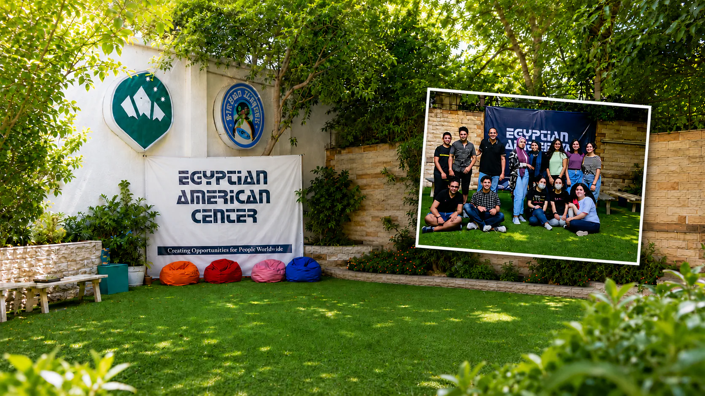

The TOEFL iBT test assesses English proficiency and consists of four sections: Reading, Listening, Speaking, and Writing.
EACC's FAQ
Whether you are improving your English skills or preparing for an international exam, EACC gives you the key details to start with confidence.
Exam support
Frequently asked questions
Find clear answers about TOEFL iBT, IELTS, PTE, and OET structure, timing, scoring, score reports, and how EACC preparation helps you study with confidence.

Start prepared
Clear answers before test day.
TOEFL iBT
Everything you need to know before preparing for TOEFL iBT with EACC.
No matching questions found. Try another keyword.
TOEFL iBT test consists of 4 main skills:
- Reading: 35 minutes, 20 questions based on two passages.
- Listening: 36 minutes, 28 questions about lectures and conversations.
- Speaking: 16 minutes, 4 tasks, including discussing a topic and responding to reading and listening materials.
- Writing: 29 minutes, 2 tasks�one based on reading and listening, and one on expressing an opinion.
The test takes just 2 hours to complete, but you should plan for 2.5 hours, including 30 minutes for check-in.
Yes, you can take notes during any audio segment to help answer the questions.
Each section is scored separately, and the total score is out of 120. The Writing section is evaluated using AI and human raters.
Your scores will be available in your ETS account 4�8 days after your test. The exact date you can expect to receive your official scores will be displayed at the end of your TOEFL iBT test.
A PDF version of your score report will be made available for download 24-48 hours after you receive your official scores.
At the end of the test, you will be able to view your unofficial Reading and Listening scores, to get an idea of how you performed on the test.
Your official scores will be posted in your ETS account 4�8 days after your test. The exact date you can expect to receive your official scores will be displayed at the end of your test.
If you requested a paper score report during registration, it will be mailed to you.
Yes, a PDF score report will be available for download 1 day after your official scores are posted.
All TOEFL scores go through ETS quality checks before being officially released. The unofficial TOEFL iBT scores might change after statistical analysis.
TOEFL iBT scores are valid for 2 years from the test date. Scores will not be reported or sent by ETS after 2 years.
Express shipping is available in several countries and territories for paper score reports sent to the test taker, for a fee. Express score reports are usually delivered 2�5 business days after test scores are confirmed or the additional score report is ordered. If express shipping is an option for your location, you will have the option to select it during test registration or when ordering an additional score report.
Your test taker score report includes the total score and section scores from a single test date, and your MyBest scores, which are the highest section scores from all valid test dates, and the sum of those scores.
You can view additional score information in your ETS account, including:
- Your proficiency level for each section of the test.
- Feedback on which Reading and Listening question types you�ve successfully demonstrated, and which are still developing.
- A closer look at your Speaking and Writing skills, with insights into your language use, grammar, mechanics and more.
- Sample high-scoring Speaking and Writing responses with explanations to help you practice and improve.
Each institution sets its own score requirements, so it�s important to check with the institutions where you are applying, to confirm whether they accept MyBest scores.
A good TOEFL iBT score for you is the score you need to meet the English-language requirements of the institutions where you are applying.
Institutions� requirements vary, so be sure to check the requirements with them directly.
In general, elite universities may require a total score of 100 or more. Mid-tier universities may require around 80. Some programs have section score requirements in addition to a total score.
The table below gives a general comparison between TOEFL iBT and IELTS bands.
| TOEFL iBT Score (0�120) | IELTS Band (0�9) |
|---|---|
| 118 | 9 |
| 115 | 8.5 |
| 110 | 8 |
| 102 | 7.5 |
| 94 | 7 |
| 79 | 6.5 |
| 60 | 6 |
| 46 | 5.5 |
| 35 | 5 |
| 32 | 4.5 |
| 0-31 | 0-4 |
You can request a score review for your Speaking and/or Writing section up to 30 days after your test, for a fee.
You can�t request a score review if you have already requested that your scores be sent to any institution or agency.
Reading and Listening scores cannot be reviewed or appealed.
EACC preparation course aims to:
- Familiarize you with the test format.
- Improve your reading, writing, speaking, and listening skills.
- Teach special tips and techniques to pass the exam.
- Help you boost your TOEFL score.
- Provide strategies to manage test time effectively.
- Prepare you for the test day process.
EACC provides a variety of mock tests to support your practice and boost your confidence for exams.
IELTS
Clear answers about IELTS Academic, General Training, UKVI, One Skill Retake, scoring, age requirements, and computer or paper test options.
No matching IELTS questions found. Try another keyword.
The International English Language Testing System (IELTS) is an English language test designed to help you study, migrate, or work in a country where English is the native language.
IELTS has two test types: IELTS Academic and IELTS General Training. Both assess your English language skills in listening, reading, writing, and speaking.
IELTS is jointly owned by the British Council, IDP: IELTS Australia, and Cambridge Assessment English.
You must be able to demonstrate a high level of English language proficiency if you want to work, live, or study in an English-speaking country.
For people wishing to migrate to countries like Australia, New Zealand, Canada, and the UK, IELTS is the test of choice. More than 12,000 employers, universities, schools, and immigration organisations worldwide, including 3,400 institutions in the USA, recognise IELTS as proof of English language proficiency.
IELTS Academic
IELTS Academic is ideal if you want to study at an English-speaking institution or university in higher education.
The test evaluates whether you are ready to start studying in English. It uses terminology common in academic contexts and can also be taken for professional registration purposes.
IELTS Academic can be taken either on paper or on computer.
IELTS General Training
IELTS General Training is the best fit if you want to study below degree level, including studying at an English-speaking school or college. It can also be taken for work experience or employment training.
IELTS General Training is required for migration to Australia, the UK, New Zealand, and Canada. The test covers common English language skills needed in social and professional settings.
You can take IELTS General Training on paper or on computer.
The place where you want to study, work, or migrate affects which exam you need. For example, if you want to go to the United Kingdom, you may need an IELTS for UK Visas and Immigration (UKVI) test, such as IELTS General Training for UKVI, IELTS Academic for UKVI, or IELTS Life Skills A1 or B1 depending on your purpose.
The better your IELTS score, the more proficient your English communication skills are. Each immigration body, university, workplace, or institution sets its own IELTS score requirements.
The score you need depends on what you plan to do in the country, such as work or study.
IELTS is accepted by a wide range of organisations, including:
- Education: universities, schools, training colleges, and tertiary institutes.
- Government departments and agencies.
- Professional and industry bodies.
- Companies and employers.
Your results are presented as band scores, with each band reflecting a different level of English language proficiency from 1 to 9.
IELTS One Skill Retake lets you retake one part of the test: Listening, Reading, Writing, or Speaking, without redoing all four parts.
It can help you improve a specific skill score and get back on track toward your study, work, or migration goal.
You are eligible to book IELTS One Skill Retake after you have recently completed a full IELTS on computer test and received your IELTS test score from an eligible test centre.
You must book your IELTS One Skill Retake within 60 days of your original test date.
IELTS One Skill Retake is accepted by various universities and professional bodies. Always check the website of the organisation you intend to apply to for the latest eligibility requirements.
IELTS One Skill Retake is available worldwide in selected test locations. For specific availability, check with your test centre.
IELTS One Skill Retake allows you to retake one of the four skills: Listening, Reading, Writing, or Speaking, if you need to improve in just one area.
If you feel you did not perform at your best in one part, One Skill Retake can help you get back on track.
Yes, you can take IELTS One Skill Retake if:
- You completed a full test at a centre that offers One Skill Retake.
- Your full test was an eligible IELTS on computer test.
- You sit your One Skill Retake within 60 days of your full IELTS test.
The price for One Skill Retake is the same whether you retake IELTS Speaking, Listening, Reading, or Writing.
There is no separate registration fee or payment processing fee, and there is no additional fee for last-minute bookings.
You can take IELTS One Skill Retake up to 60 days after your original IELTS test.
IELTS General Training is for people who wish to study, live, or work abroad in an English-speaking country.
It focuses on assessing proficiency, confidence, and comfort when communicating in English in daily situations you are likely to encounter in a native English-speaking environment.
Take this test if you would like to:
- Migrate to English-speaking countries such as Canada, Australia, New Zealand, or the UK.
- Study or train below degree level.
- Work in an English-speaking country or improve job opportunities in your own country.
- Open doors to a new future.
The General Training test looks at your English-language capabilities in a work or social environment. It may be needed if you plan to study in secondary education, enrol in vocational training, move abroad for work, or migrate to Canada, Australia, New Zealand, or the UK.
The test assesses listening, reading, writing, and speaking. Listening and Speaking are the same as IELTS Academic, while Reading and Writing are different.
The tasks reflect workplace and social situations, such as:
- Speaking: a face-to-face informal conversation with an examiner in a private, quiet room.
- Writing: writing a letter about a social situation and an essay responding to a topic.
- Reading: up to four short passages from everyday texts such as adverts or news articles.
- Listening: listening to people discussing everyday topics.
The General Training Reading test consists of three sections and 40 questions. It focuses on everyday life, work-related issues such as applying for a job, and topics of general interest.
The extracts are taken from books, magazines, newspapers, notices, advertisements, company handbooks, and guidelines.
- Section 1 focuses on social survival skills through short texts relevant to everyday life.
- Section 2 focuses on workplace survival skills using texts such as job descriptions, contracts, and training manuals.
- Section 3 includes a longer and more complex text on a topic of general interest.
The General Training Writing test has two tasks: Writing Task 1 and Writing Task 2. The topics are of general interest.
In Writing Task 1, you are given a situation and asked to write a letter requesting information or explaining a situation.
In Writing Task 2, you write an essay in response to a point of view, argument, or problem. You are assessed on your ability to present information, outline problems, suggest solutions, justify opinions, and evaluate ideas or evidence.
If you want to work, study, migrate, or seek vocational training in the UK, you might need to take IELTS for UKVI. It is a Secure English Language Test (SELT) approved by the UK Home Office for visa applications to the United Kingdom.
IELTS General Training for UKVI is the same as IELTS General Training in content, format, scoring, and level of difficulty, but it is available only at test centres that meet UK Home Office administrative requirements.
Your Test Report Form (TRF) will also look slightly different if you take an IELTS for UKVI test.
The IELTS Academic test assesses your English-language proficiency at an academic level to determine whether you are ready to study at undergraduate or postgraduate level, or work in a professional setting such as doctor, nurse, teacher, or lawyer.
The Academic test assesses Listening, Reading, Writing, and Speaking. Listening and Speaking are the same for Academic and General Training, while Reading and Writing are different.
If you plan to study in higher education or seek professional registration in an English-speaking country, you might need to take IELTS Academic.
You can choose IELTS on computer or IELTS on paper for both General Training and Academic tests.
The test format, question types, time allocated, and content are the same for computer and paper tests. The only difference is the test day experience and delivery method.
For Academic and General Training, you take the same Listening and Speaking tests but different Reading and Writing tests. Make sure you prepare for the correct test type.
Listening, Reading, and Writing are completed on the same day with no breaks in between. The Speaking test may be scheduled up to a week before or after the other parts. The total time for Listening, Reading, and Writing is 2 hours and 45 minutes.
IELTS Academic: Listening
The Academic Listening test is identical to General Training Listening. It evaluates your ability to understand key points, details, opinions, goals, attitudes, and the development of ideas.
IELTS Academic: Reading
Academic Reading assesses skills such as following an argument, recognising a writer�s opinion, attitude or purpose, understanding main ideas, details, opinions, implied meanings, skimming, scanning, and reading for detail.
The Academic Reading test has three long texts from books, journals, magazines, and newspapers related to topics you may encounter in undergraduate, postgraduate, or professional registration contexts.
IELTS Academic: Writing
Academic Writing has two tasks. The questions are different from those in General Training Writing.
IELTS Academic: Speaking
The Speaking test is the same for Academic and General Training. It is a face-to-face test with an IELTS-certified examiner and is recorded for possible review.
The Speaking test takes 11 to 14 minutes and has three parts covering a variety of topics.
Your results are presented as band scores, with each band reflecting a different level of English proficiency from 1 to 9. You receive a band score for Listening, Reading, Writing, and Speaking, as well as an overall band score.
IELTS uses the same 9-band scoring system across all formats, with 1 being the lowest and 9 being the highest.
The minimum age for IELTS varies by location. In most countries, there is no minimum or maximum age limit for the IELTS test.
However, it is not recommended for anyone under 16 to sit the test. Test takers under 18 may be chaperoned to and from test rooms and during the Speaking test.
IELTS may be required for entry into your desired course at an educational institution. It is also used in many countries as part of migration assessment.
If you are not sure why you need IELTS or what score you need, contact the organisation you are applying to.
You can take IELTS Academic and General Training on paper. The content, timing, question types, scoring, and results are the same as IELTS on computer, but the test day experience is different.
Test day staff give you booklets and answer sheets before each test part and collect them before moving to the next part.
For IELTS on paper, Reading, Listening, and Writing are completed on paper. You may use a pen or HB pencil for Writing, but you must use an HB pencil for Listening and Reading answers on the answer sheet.
Writing, Reading, and Listening are completed on the same day with no breaks. Speaking is a face-to-face interview with an IELTS examiner and may be completed one week before or after your test date.
IELTS on Computer is available for both General Training and Academic tests. You complete the Reading, Listening, and Writing parts using a computer, and all answers are typed on the screen.
You can also write notes on a notes sheet during the Listening test.
IELTS Speaking remains a face-to-face interview with an examiner and is completed either just before or just after the Reading, Listening, and Writing parts.
With IELTS on computer, your results are usually available within 1 to 5 days.
PTE
Answers about PTE test benefits, automated scoring, score levels, test day experience, Academic, Core, Home, UKVI options, and EACC preparation support.
No matching PTE questions found. Try another keyword.
No human examiners
Each test is fully computer-based and taken in a global test center, so you do not have to face a human examiner.
Just one test
Computer-based testing means you attend one two-hour test instead of two separate sessions to get the score you need.
Faster
Automated scoring makes it quicker to book, quicker to receive scores, and easier to share scores for free with as many institutions as you choose.
Automated scoring is designed to match the way an expert examiner would mark your test, but on a global scale that provides consistent, fast results for every test taker.
Building an accurate automated scoring system requires vast amounts of data. In 2020 alone, more than 678,000 examiner responses were fed into the algorithm, with more added every year.
When you take your test, your answers are compared with millions of past responses and the combined knowledge of hundreds of examiners to produce an accurate, objective, consistent score.
PTE Academic
PTE Academic and PTE Academic UKVI include 20 question types that assess speaking, listening, reading, and writing. Scores are based on question complexity, and the overall score is graded between 10 and 90.
PTE Core
PTE Core includes 19 question types that assess speaking, listening, reading, and writing. Scores are based on question complexity, and the overall score is graded between 10 and 90.
PTE Home
PTE Home tests are two-skill tests that assess speaking and listening. You receive a pass or fail result.
Each PTE Academic test has 20 auto-scored question types. Multiple-choice answers are scored as right or wrong, while more complex responses such as essays are scored using several criteria.
Some responses may also be reviewed by a human expert before the automated score is finalised.
Each institution sets its own required score. Always check with your institution, but typical minimum scores are:
- Foundation courses: minimum score between 36 and 50.
- Undergraduate degrees: minimum score between 51 and 60.
- Postgraduate degrees: minimum score between 57 and 67.
A PTE Academic score of 85 to 90 is equivalent to CEFR C2. Universities or governments typically do not request scores this high.
This is the highest level of English ability measured by PTE. At this level, test takers are extremely comfortable engaging in academic and work activities at all levels.
- Can understand with ease virtually everything heard or read.
- Can summarize information from spoken and written sources in a coherent presentation.
- Can express himself or herself spontaneously, very fluently, and precisely, even in complex situations.
A PTE Academic score of 76 to 84 is equivalent to CEFR C1 and is commonly required for Australian Skilled Migration Visas.
This represents a very high level of English proficiency and is generally not required for undergraduate courses.
- Can understand a wide range of demanding, longer texts and recognize implicit meaning.
- Can express himself or herself fluently and spontaneously without much searching for expressions.
- Can use language flexibly and effectively for social, academic, and professional purposes.
- Can produce clear, well-structured, detailed text on complex subjects.
CEFR B2 is typically required to follow academic instruction and participate in academic education, including coursework and student life. It may be set for undergraduate or postgraduate entry, professional registration, employment, and Australian skilled migration visas.
- Can understand the main ideas of complex text on concrete and abstract topics, including technical discussions in a field of specialization.
- Can interact with oral fluency and spontaneity that makes regular interaction with fluent speakers possible without strain.
- Can produce clear, detailed text on a wide range of subjects and explain viewpoints with advantages and disadvantages.
A PTE Academic score of 43 to 58 is equivalent to CEFR B1 and may be required for undergraduate level study.
- Can understand the main points of clear standard input on familiar matters in work, school, leisure, and similar contexts.
- Can deal with most situations likely to arise in an area where the language is spoken.
- Can produce simple connected text on familiar or personally interesting topics.
- Can describe experiences, events, dreams, hopes, and ambitions, and briefly give reasons and explanations for opinions and plans.
PTE tests are taken on a computer at a test center. Usually, around 10 to 15 people take their test together.
You should arrive 30 minutes before your test to complete secure check-in and get ready.
When you arrive
A PTE Test Center Administrator will greet you, guide you through check-in, and make sure you understand the rules and procedures.
- They will check your ID details against your booking.
- They will take a digital photograph, digital signature, and palm scan.
- They will provide a safe place for your personal items.
During the test
You will sit in a partitioned booth with a computer, QWERTY keyboard, audio headset, chair, notepad, and pencil. You may hear nearby test takers speaking, but microphones are designed not to pick up their responses.
PTE Academic, PTE Academic UKVI, and PTE Core take two hours. PTE Home takes 30 minutes.
Acceptable ID
Because PTE tests are taken in secure test centers, you must provide an acceptable ID, usually a valid passport. Refer to the PTE Pearson identification policy for details.
Part 1: Speaking and Writing
This section is approximately 50 minutes long and includes everyday English speaking and writing tasks.
- Personal Introduction.
- Read Aloud.
- Repeat Sentence.
- Describe Image.
- Respond to a Situation.
- Answer Short Question.
- Summarize Written Text.
- Write Email.
Part 2: Reading
This section is approximately 30 minutes long and includes five question types. Reading and Writing: Fill in the Blanks also assesses writing skills.
- Reading and Writing: Fill in the Blanks.
- Multiple Choice, Multiple Answers.
- Reorder Paragraph.
- Fill in the Blanks.
- Multiple Choice, Single Answer.
Part 3: Listening
- Summarize Spoken Text.
- Multiple Choice, Multiple Answers.
- Fill in the Blanks.
- Multiple Choice, Single Answer.
- Select Missing Word.
- Highlight Incorrect Words.
- Write from Dictation.
Part 1: Speaking and Writing
This section takes 54 to 67 minutes and includes academic speaking and writing tasks.
- Personal Introduction.
- Read Aloud.
- Repeat Sentence.
- Describe Image.
- Re-tell Lecture.
- Answer Short Question.
- Summarize Written Text.
- Essay.
Part 2: Reading
This section takes 29 to 30 minutes and includes five question types. Reading and Writing: Fill in the Blanks also assesses writing skills.
- Reading and Writing: Fill in the Blanks.
- Multiple Choice, Multiple Answer.
- Re-order Paragraphs.
- Fill in the Blanks.
- Multiple Choice, Single Answer.
Part 3: Listening
This section takes 30 to 43 minutes and includes eight question types based on audio or video clips. Each clip plays once, and you may take notes.
- Summarize Spoken Text.
- Multiple Choice, Multiple Answers.
- Fill in the Blanks.
- Highlight Correct Summary.
- Multiple Choice, Single Answer.
- Select Missing Word.
- Highlight Incorrect Words.
- Write from Dictation.
If you are applying for a spouse visa or a parent-of-a-dependent visa, you can take PTE Home A1. If you already live in the UK and need an extension to your A1 visa, you can take PTE Home A2.
UK student visas
For degree-level or higher courses at a UK Higher Education Institution, you can take PTE Academic. Choose PTE Academic UKVI if the course is below degree level or the institution is not a Higher Education Institution.
PTE Academic and PTE Academic UKVI are the same test, but PTE Academic UKVI provides a Unique Reference Number (URN) for your UK visa application. Always check the institution requirements.
UK work visas
- Choose PTE Academic UKVI for Skilled Worker, Start-up, Innovator, and Minister of Religion visas.
- Choose PTE Home A1 for Sportsperson and Representative of an Overseas Business visas.
Practice now and get instant feedback with our cutting-edge PTE platform. EACC supports you with expertly designed mock tests, personalized study plans, and goal-setting tools that help you stay on track, improve your skills, and reach your target score faster.
OET
Answers about OET recognition, healthcare-focused test design, profession-specific sections, eligibility, and the full test format.
No matching OET questions found. Try another keyword.
OET is specifically tailored for healthcare professionals. It is developed with healthcare experts and backed by research to help candidates build the language skills needed for professional success.
- Recognized globally in the US, UK, Ireland, Australia, New Zealand, and beyond by healthcare regulators, educational institutions, and visa and immigration authorities.
- Uses authentic healthcare scenarios relevant to your profession, helping you feel prepared and confident on exam day.
- Healthcare registration: use OET results to register as a healthcare professional in Australia, Canada, New Zealand, the UK, Ireland, and the US.
- Visa and immigration: meet language requirements for visa and immigration applications in Australia, New Zealand, the UK, Ireland, and the US.
- Education: apply to colleges, universities, and healthcare institutions worldwide with OET results.
- Employment: OET helps build the healthcare communication skills needed for professional success beyond the test.
- Listening.
- Reading.
- Writing.
- Speaking.
OET assesses English language proficiency, not medical knowledge. To keep the focus on language skills, areas where background medical knowledge could influence responses are minimized.
Listening and Reading are not profession-specific. They are the same for all candidates and focus on general medical and healthcare topics while assessing language ability.
Writing and Speaking are profession-specific because they reflect real workplace scenarios for each healthcare profession, allowing candidates to show practical job-related communication skills.
Preparing for OET can improve workplace readiness and confidence in professional communication with patients and colleagues.
No. OET does not offer a generic test. The exam is contextualized and profession-specific for 12 healthcare fields: Dentistry, Dietetics, Medicine, Nursing, Occupational Therapy, Optometry, Pharmacy, Physiotherapy, Podiatry, Radiography, Speech Pathology, and Veterinary Science.
If your field is not listed, you may take the OET test that most closely aligns with your profession, but you should review sample materials and check with the relevant regulatory authority before registering.
If you are not a healthcare professional seeking registration in an English-speaking environment, OET may not be the most suitable English assessment for your needs.
OET is designed to assess the language and communication skills of healthcare professionals who plan to work in English-speaking healthcare settings.
Before registering, consult the relevant regulatory authorities to confirm whether OET is suitable and accepted for your purpose.
Listening
The Listening sub-test is about 40 minutes long. It has three parts and 42 question items. Topics are of general healthcare interest and accessible to candidates across all professions.
- Part A: two recorded health professional-patient consultations, about five minutes each, where you complete notes.
- Part B: six short workplace extracts, about one minute each, with one multiple-choice question for each.
- Part C: two presentation or interview extracts, about five minutes each, with six multiple-choice questions for each.
Reading
The Reading sub-test has three parts, 42 questions, and takes 60 minutes. Topics are of general healthcare interest.
- Part A: a 15-minute expeditious reading task using four short texts on one healthcare topic.
- Part B: six short workplace extracts such as policies, guidelines, manuals, emails, or memos, with one multiple-choice question each.
- Part C: two longer professional development articles with eight multiple-choice questions for each. Parts B and C together take 45 minutes.
Writing
The Writing sub-test takes 45 minutes and is profession-specific. There is one task based on a typical workplace situation for your profession.
The task is usually a referral letter, but may also be a transfer letter, discharge letter, advice or information letter, or a response to a complaint. You have five minutes to read case notes and 40 minutes to write.
Speaking
The Speaking sub-test takes around 20 minutes and is profession-specific. It includes two role-play tasks based on typical workplace situations.
In each role play, you take the professional role while the interlocutor acts as a patient, client, relative, carer, or animal owner for Veterinary Science. Each role play includes three minutes to prepare and five minutes to perform.
Still need help?
Contact EACC and our admissions team will guide you to the right test preparation path.